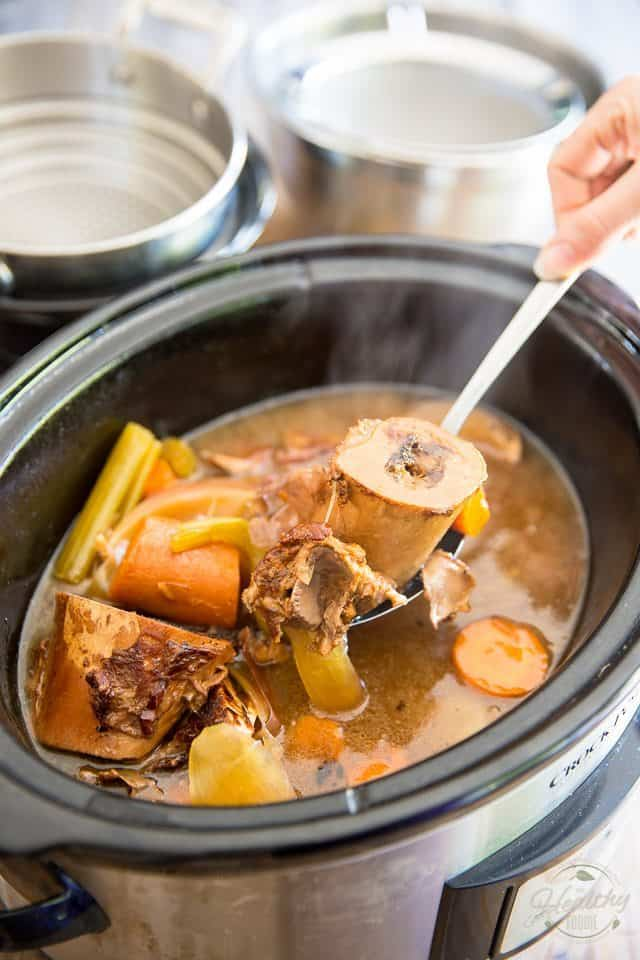

Slow-Cooked Bone Broth

Description
Super simple to make and perfect on keto. Your choice! Prepare by 1) Instant Pot/pressure cooker 2) Slow cooker or 3) Stovetop. Bone broth is your best friend during intermittent fasting... or anytime. Home-made, soothing, and rich in nutrients. We can almost smell the wholesome aroma of bone broth. "Bone Appetit!"
Ingredients
- 2.3 kg beef bones, or lamb, or a combination of the two
- 3 tbsp coconut oil
- 1 (110 g) yellow onion, roughly chopped (optional)
- carrot roughly chopped (optional)
- 1 whole garlic unpeeled & slightly crushed (optional)
- 1 tbsp salt
- 1 tsp black peppercorns
- fresh thyme or fresh parsley
- 1 tbsp white wine vinegar
- Water
Instructions
Roasting the bones
- Preheat the oven to 450°F (225°C).
- Place bones in a baking dish with sides. Brush the bones with melted coconut oil, coating thoroughly.
- Roast until the bones are properly browned. This will take about 1-1.5 hours; turn once, about halfway through. Add a cup or two of water towards the end to prevent the juices and flavours from accumulating in the dish from burning.
Instant Pot/pressure cooking
- Follow the steps in Roasting the bones above.
- Place the bones, herbs, vegetables (if using), and vinegar into the Instant Pot. Completely cover the ingredients with cold water, leaving some space below the “MAX fill” line.
- Place and lock the lid on the Instant Pot. Move the lid’s steam release handle to the “Sealing” position.
- On the control panel, select the “Manual” setting/high pressure, and adjust the cooking time to 120 minutes. It can take anywhere from 10 to 40 minutes, within the 120-minute cook time, to preheat the pot to full pressure.
- When the cooking time is up, let the pressure release naturally (approx. 10-15 minutes) until the float valve drops down. Before removing the lid, move the vent handle to the “venting” position to release extra pressure.
- Strain the broth over a bowl using a mesh strainer or cheesecloth. The broth is done when it’s deep brown in colour and deeply flavourful Season the broth with salt and pepper to taste. Cool broth to room temperature and then transfer to an airtight container(s).
Slow Cooker
- Follow the steps in Roasting the bones above.
- Place the bones, herbs, vegetables (if using), and vinegar into the slow cooker. Fill the slow cooker with water, completely covering the ingredients. Set the temperature to low, and cook for 12-18 hours. The broth is done when it’s deep brown in colour and deeply flavourful Season with salt and pepper to taste.
- Strain the broth into a bowl using a mesh strainer or cheesecloth. Cool broth to room temperature and then transfer to an airtight container(s).
Stove Top
- Follow the steps in Roasting the bones above.
- Transfer the bones, herbs, vegetables (if using), and vinegar into a big pot. Add water to cover the ingredients by a few inches. Boil for 10-15 minutes. Lower the heat and let simmer for 8-24 hours. The broth is done when it’s deep brown in colour and flavourful Season with salt and pepper to taste.
- Strain the broth into a bowl using a mesh strainer or cheesecloth. Cool broth to room temperature and then transfer to an airtight container(s).
Nutrients
| Carbs |
Protein |
Fat |
Calories |
Fibre |
Sugar |
Sodium |
Calcium |
Sat |
GL |
| (g) |
(g) |
(g) |
(kCal) |
(g) |
(g) |
(mg) |
(mg) |
Fat (g) |
(g) |
| 1.13 |
26.34 |
18.25 |
282.04 |
0.37 |
0.35 |
418.15 |
9.33 |
7.89 |
0.19 |
Back to top of page